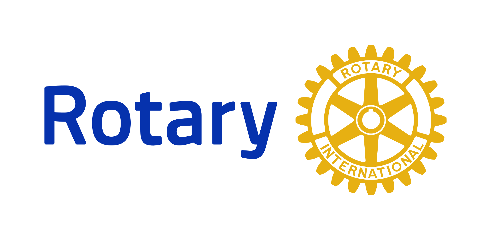

Szponsorok



Az E-Sport a versenysport a maga nemében. A játékosok olyan népszerű játékokban versenyeznek a dicsőségért és a díjakért, mint a Fortnite, a Valorant, a Counter Strike 2 és a League of Legends!
január 15 - január 20
január 25 - január 27
február 1.
Eddig regisztrált: 0
100.000 Ft Mediamarkt ajándékutalvány + érem + trófea + oklevél
50.000 Ft Mediamarkt ajándékutalvány + érem + + oklevél
30.000 Ft Mediamarkt ajándékutalvány + érem + + oklevél
Az eredményeket itt frissítjük a verseny ideje alatt.
Csapat: Let Us Cook
Játék: Counter Strike 2
Csapat: Dragon Slayers
Játék: Valorant
Csapat: Pixel Warriors
Játék: League of Legends